تصوير الحوضPelvis Radiography
نظري · م03 · 10.0 دقيقةأقسام المحاضرة (8)
- المسقطات وعوامل التعرّضProjections & Technical Factors
- تشريح الحوضPelvis Anatomy
- صورة الحوض الأمامية الخلفية ومفاصل الحوضPelvis AP Radiograph & Pelvic Joints
- إسقاط الحوض الأمامي الخلفي (الوركان معاً)AP Pelvis (Bilateral Hips)
- إسقاط ساق الضفدع الأمامي الخلفي للجانبينAP Bilateral Frog-Leg (Modified Cleaves)
- الإسقاط المحوري الأمامي الخلفي لمخرج الحوضAP Axial Outlet (Taylor)
- الإسقاط المحوري الأمامي الخلفي لمدخل الحوضAP Axial Inlet
- الإسقاط المائل الخلفي للحوض والحُقّPosterior Oblique Acetabulum (Judet)
المسقطات وعوامل التعرّضProjections & Technical Factors
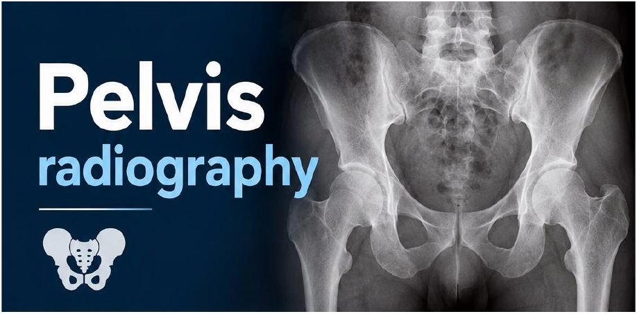
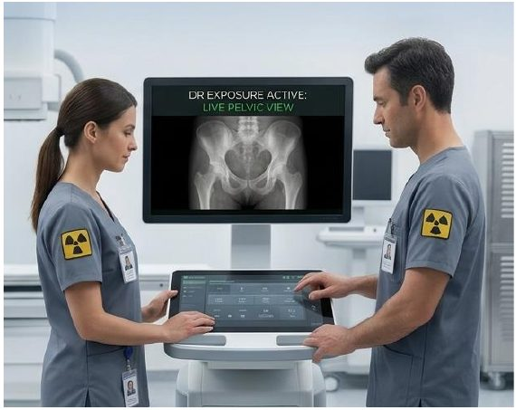
المسقطات: الحوضPROJECTIONS — Pelvis
- 1. AP Pelvis projection (bilateral hips): Pelvisإسقاط AP للحوض (الوركان معاً).
- 2. AP bilateral frog-leg projection: Pelvisإسقاط AP لوضعية ساق الضفدع للجانبين.
- 3. AP axial outlet projectionإسقاط AP المحوري لمخرج الحوض.
- 4. AP axial inlet projection*: Pelvisإسقاط AP المحوري لمدخل الحوض*.
- 5. Posterior oblique Pelvis–acetabulumالإسقاط المائل الخلفي للحوض والحُقّ.
عوامل التعرّضTechnical Factors
- • Minimum SID is 40 inches (102 cm).أقل مسافة بين المصدر ومستقبِل الصورة SID هي 40 إنش (102 سم).
- • IR size—35 × 43 cm (14 × 17 inches), Lengthwiseحجم مستقبِل الصورة IR: 35 × 43 سم (14 × 17 إنش)، بالطول.
- • 70-80 kVpمن 70 إلى 80 kVp.
- • 20-30 mAsمن 20 إلى 30 mAs.
- • Shielding Shield radiosensitive tissues outside region of interest.التدريع: درّع الأنسجة الحساسة للإشعاع الواقعة خارج المنطقة المطلوبة.
- • Ensure shielding does not obscure any aspect of Pelvis.تأكّد أن الدرع لا يحجب أي جزء من الحوض.
- • Shielding Shield gonads for both males and females without obscuring essential anatomy.التدريع: درّع الغدد التناسلية للذكور والإناث من دون أن تحجب التراكيب التشريحية الأساسية.
- • Respiration Suspend respiration during exposure.التنفّس: أوقِف التنفّس أثناء التعرّض.
تشريح الحوضPelvis Anatomy
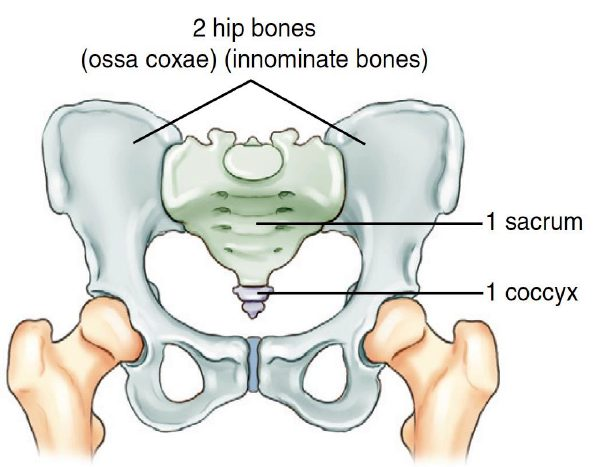
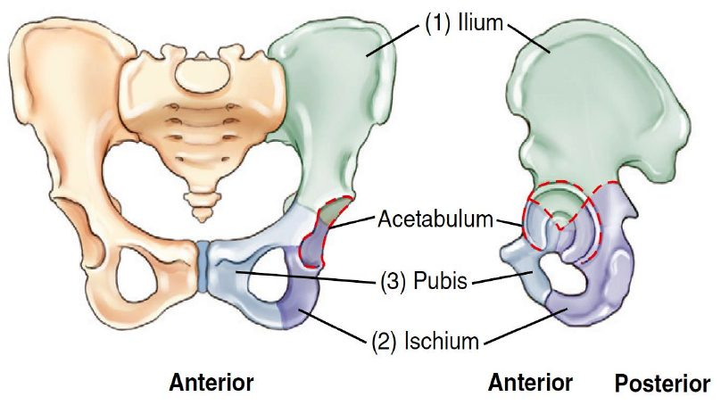
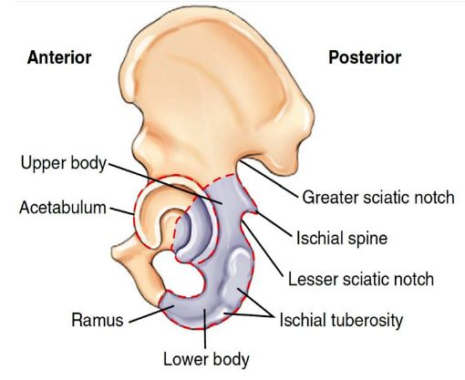
Ilium.
الحرقفة.
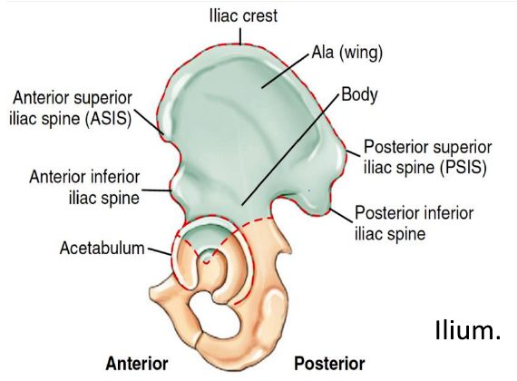
Pubis (pubic bone)
العانة (عظم العانة).
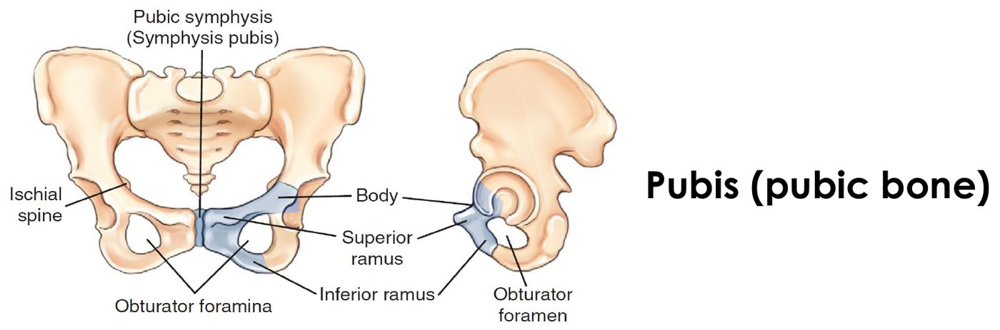
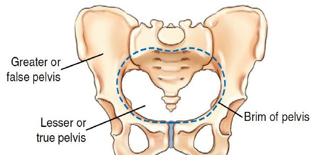
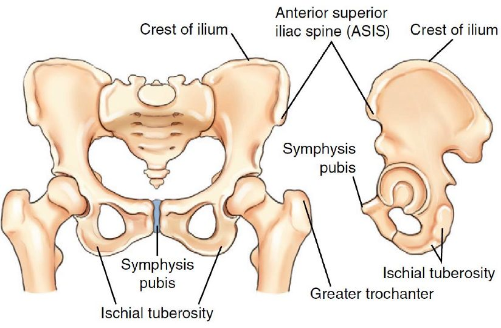
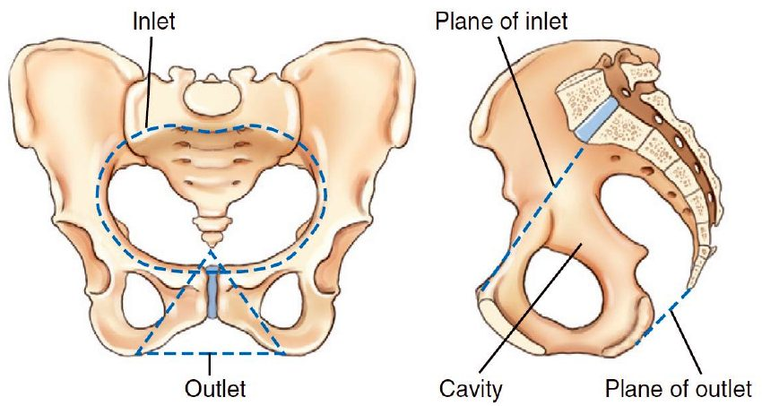
Pelvis—male versus female
الحوض: الذكر مقابل الأنثى.
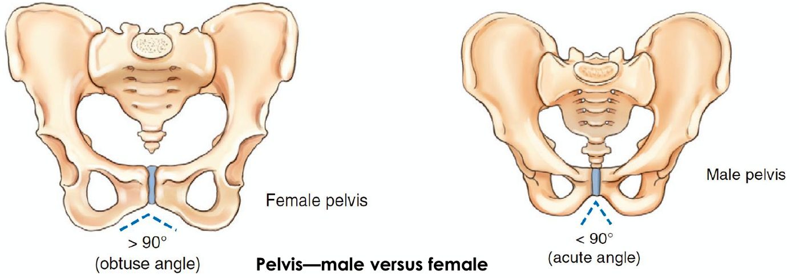
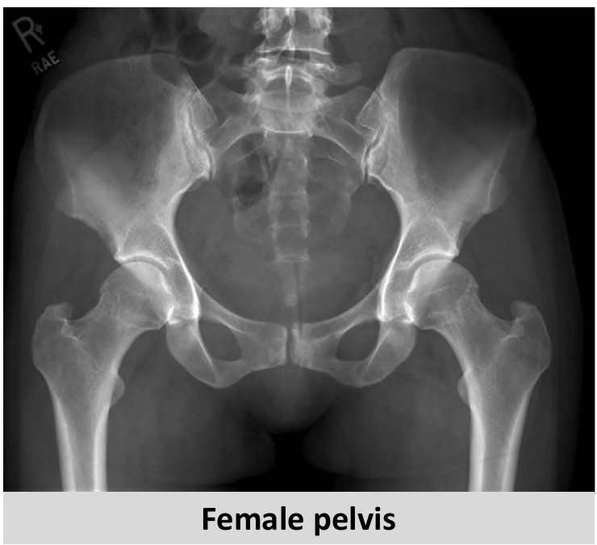
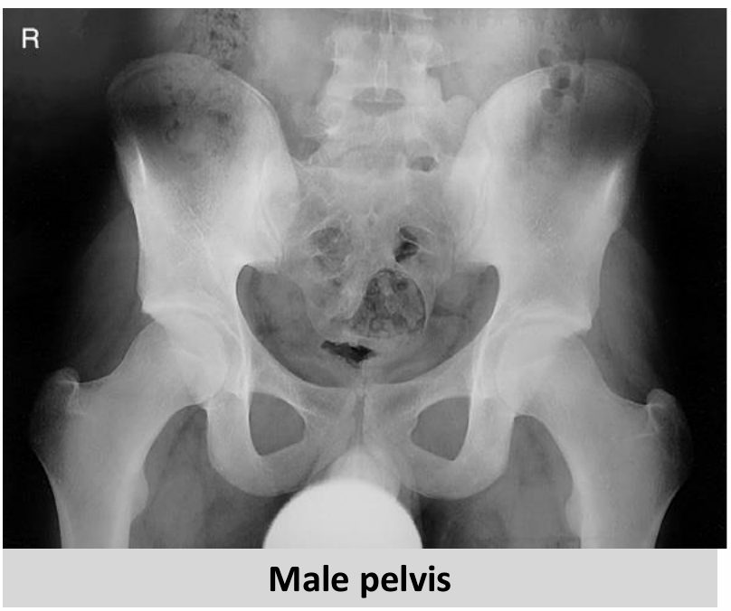
- • Female pelvisحوض الأنثى.
- • Male pelvisحوض الذكر.
صورة الحوض الأمامية الخلفية ومفاصل الحوضPelvis AP Radiograph & Pelvic Joints
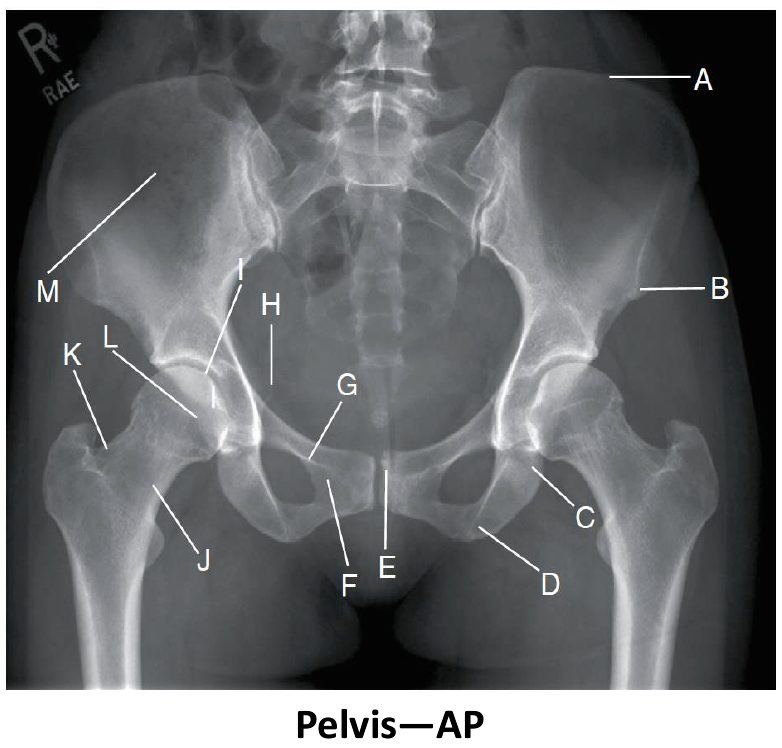
- • A. Iliac crestالعرف الحرقفي.
- • B. ASIS (anterior end of crest)الشوكة الحرقفية الأمامية العلوية (النهاية الأمامية للعرف).
- • C. Body of left ischiumجسم الإسك الأيسر.
- • D. Ischial tuberosityالحدبة الإسكية.
- • E. Symphysis pubis (Pubic symphysis)الارتفاق العاني.
- • F. Inferior ramus of right pubisالفرع السفلي للعانة اليمنى.
- • G. Superior ramus of right pubisالفرع العلوي للعانة اليمنى.
- • H. Right ischial spineالشوكة الإسكية اليمنى.
- • I. Acetabulum of right hipحُقّ الورك الأيمن.
- • J. Neck of right femurعنق عظم الفخذ الأيمن.
- • K. Greater trochanter of right femurالمدوَّر الكبير لعظم الفخذ الأيمن.
- • L. Head of right femurرأس عظم الفخذ الأيمن.
- • M. Ala, or wing, of right iliumجناح الحرقفة اليمنى.
Pelvis—AP
صورة الحوض الأمامية الخلفية.
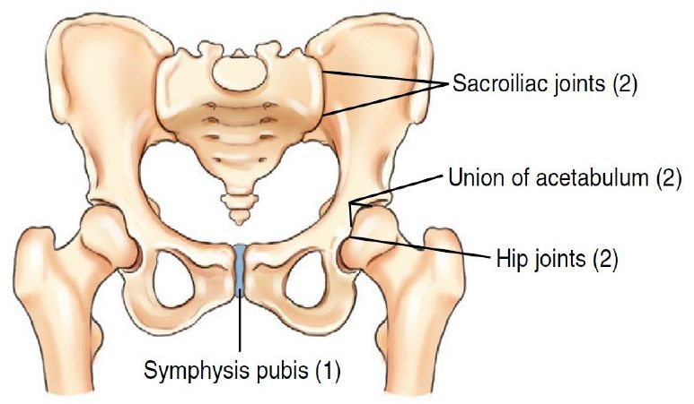
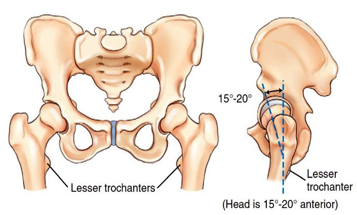
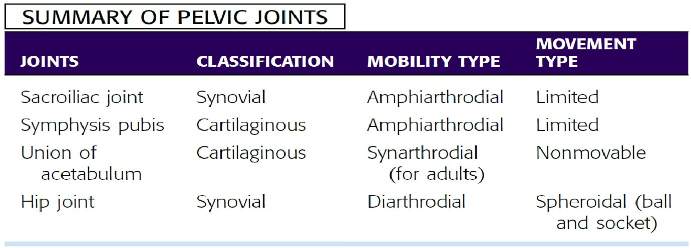
ملخّص مفاصل الحوضSUMMARY OF PELVIC JOINTS
إسقاط الحوض الأمامي الخلفي (الوركان معاً)AP Pelvis (Bilateral Hips)
دواعي الفحصClinical Indications
- • Fractures, joint dislocations, degenerative disease, and bone lesionsالكسور، وخلع المفاصل، والأمراض التنكّسية، والآفات العظمية.
وضعية المريضPatient Position
With patient supine, place arms at sides or across superior chest; provide pillow for head and support for under knees; may be performed erect with correction of lower limbs to rotate proximal femora into anatomic position and no fracture is suspected.
المريض مستلقٍ على ظهره (Supine)، والذراعان إلى الجانبين أو على أعلى الصدر؛ وضع وسادة تحت الرأس ودعامة تحت الركبتين. ويمكن إجراؤه والمريض واقف (Erect) مع تعديل وضع الطرفين السفليين لتدوير الجزء القريب من عظمي الفخذ إلى الوضع التشريحي، بشرط ألا يُشكّ بوجود كسر.
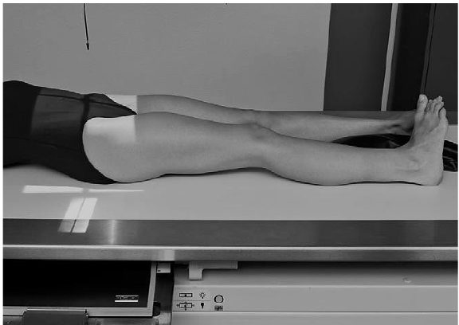
وضعية الجزءPart Position
- • Align midsagittal plane of patient to centerline of table and to CR.طابِق المستوى السهمي الناصف للمريض مع خط منتصف الطاولة ومع الشعاع المركزي CR.
- • Ensure that pelvis is not rotated; distance from tabletop to each ASIS should be equal.تأكّد أن الحوض غير مُدار؛ يجب أن تتساوى المسافة من سطح الطاولة إلى كل ASIS.
- • Separate legs and feet, then internally rotate long axes of feet and lower limbs 15° to 20°باعِد بين الساقين والقدمين، ثم دوّر المحاور الطويلة للقدمين والطرفين السفليين إلى الداخل 15 إلى 20 درجة.
- • Technologist may have to place sandbag between heels and tape top of feet together or use additional sandbags against feet to retain this position.قد يحتاج التقني إلى وضع كيس رمل بين الكعبين وربط أعلى القدمين معاً بشريط لاصق، أو استعمال أكياس رمل إضافية على القدمين للمحافظة على هذا الوضع.
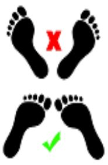
الشعاع المركزيCR
- • CR is perpendicular to IR, directed midway between level of ASIS and the symphysis pubis.الشعاع المركزي عمودي على IR، ويُوجَّه إلى منتصف المسافة بين مستوى ASIS والارتفاق العاني.
- • This is approximately 2 inches (5 cm)inferior to level of ASIS.وهذا يقع تقريباً 2 إنش (5 سم) أسفل مستوى ASIS.
- • Center IR to CR.مركِز IR على الشعاع المركزي.
ما تُظهره الصورةAnatomy Demonstrated
- • Pelvic girdle, L5, sacrum and coccyx, femoral heads and neck, and greater trochanters are visible.يظهر الحزام الحوضي، والفقرة القطنية الخامسة L5، والعجز والعصعص، ورأسا عظمي الفخذ وعنقاهما، والمدوَّران الكبيران.
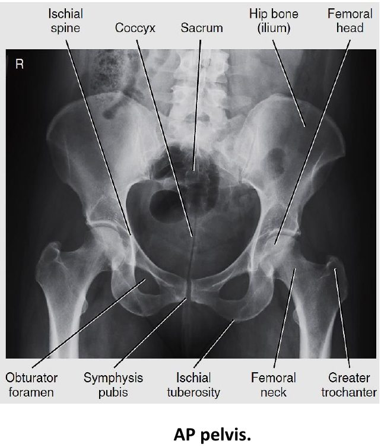
WARNING: Do not attempt to rotate legs internally if a hip fracture or dislocation is suspected. Perform position with minimal movement of affected leg.
تحذير: لا تحاول تدوير الساقين إلى الداخل إذا شُكّ بوجود كسر أو خلع في الورك. أجرِ الوضعية بأقل حركة ممكنة للساق المصابة.
إسقاط ساق الضفدع الأمامي الخلفي للجانبينAP Bilateral Frog-Leg (Modified Cleaves)
Modified cleaves method
طريقة كليفز المعدّلة.
دواعي الفحصClinical Indications
- • Demonstration of a nontrauma hipإظهار الورك في الحالات غير الرضّية (من دون إصابة).
- • Developmental dysplasia of hip (DDH), also known as congenital hip dislocation (CHD).خلل التنسّج النمائي للورك (DDH)، ويُعرف أيضاً بخلع الورك الخِلقي (الولادي) (CHD).
وضعية المريضPatient Position
With patient supine, provide pillow for head and place arms across chest
المريض مستلقٍ على ظهره، مع وسادة تحت الرأس، والذراعان على الصدر.
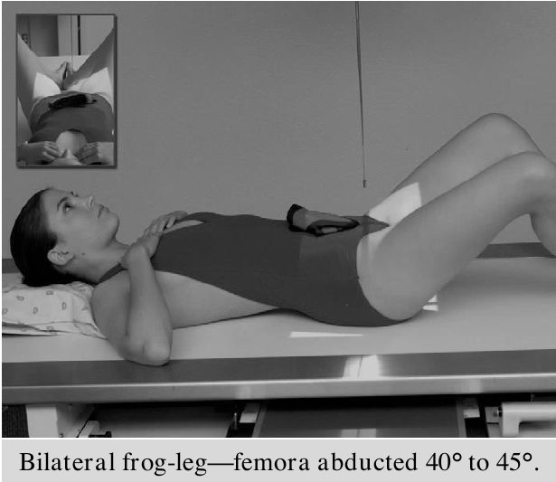
وضعية الجزءPart Position
- • Align patient to midline of table and/or IR and to CR.طابِق المريض مع خط منتصف الطاولة و/أو IR ومع الشعاع المركزي.
- • Ensure pelvis is not rotated (equal distance of ASIS to tabletop).تأكّد أن الحوض غير مُدار (تساوي مسافة ASIS عن سطح الطاولة).
- • Center IR to CR, at level of femoral heads, with top of IR Approximately at level of iliac crest.مركِز IR على الشعاع المركزي عند مستوى رأسي عظمي الفخذ، بحيث تكون الحافة العليا لـIR تقريباً عند مستوى العرف الحرقفي.
- • Flex both knees approximately 90°, as demonstrated.اثنِ الركبتين تقريباً 90 درجة، كما هو موضّح.
- • Place the plantar surfaces of feet together and abduct both femora 40° to 45° from vertical.ضع باطنَي القدمين معاً، وأبعِد عظمي الفخذ 40 إلى 45 درجة عن الخط العمودي.
- • Ensure that both femora are abducted the same amount and that pelvis is not rotated.تأكّد أن عظمي الفخذ مُبعَدان بالمقدار نفسه وأن الحوض غير مُدار.
- • Place supports under each leg for stabilization if needed.ضع دعامات تحت كل ساق لتثبيتها عند الحاجة.
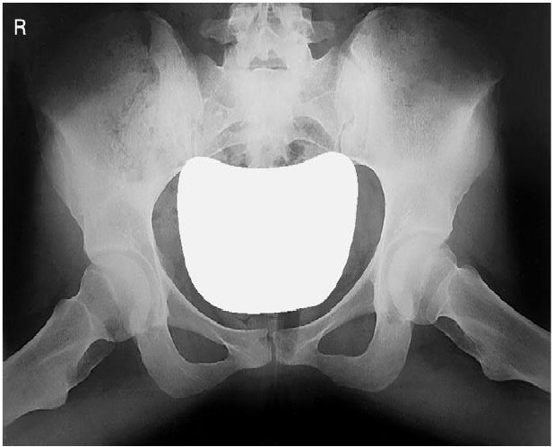
الشعاع المركزيCR
CR is perpendicular to IR, directed to a point 3 inches (7.5 cm) below level of ASIS (1 inch [2.5 cm] above symphysis pubis).
الشعاع المركزي عمودي على IR، ويُوجَّه إلى نقطة تقع 3 إنش (7.5 سم) أسفل مستوى ASIS (أي 1 إنش [2.5 سم] فوق الارتفاق العاني).
NOTE 1: This projection frequently is performed for periodic follow-up examinations on younger patients. Correct placement of gonadal shielding is important for male and female patients, ensuring that hip joints are not obscured.
ملاحظة 1: يُجرى هذا الإسقاط كثيراً في فحوص المتابعة الدورية للمرضى الأصغر سناً. والوضع الصحيح لدرع الغدد التناسلية مهم للذكور والإناث، مع التأكّد من أنه لا يحجب مفصلي الورك.
NOTE 2: Less abduction of femora of only 20° to 30° from vertical provides for the least foreshortening of femoral necks, but this placement foreshortens the entire proximal femora, which may not be desirable.
ملاحظة 2: إبعاد عظمي الفخذ بمقدار أقل، 20 إلى 30 درجة فقط عن الخط العمودي، يعطي أقل تقصير لعنقي عظمي الفخذ، لكن هذا الوضع يقصّر الجزء القريب من عظمي الفخذ كله، وقد لا يكون ذلك مرغوباً.
ما تُظهره الصورةAnatomy Demonstrated
- • Femoral heads and necks, acetabulum, and trochanteric areas are visible on one radiograph.يظهر رأسا عظمي الفخذ وعنقاهما، والحُقّ، ومنطقتا المدوَّرين في صورة شعاعية واحدة.
الإسقاط المحوري الأمامي الخلفي لمخرج الحوضAP Axial Outlet (Taylor)
(for anterior-inferior pelvic bones): Pelvis Taylor method
(لعظام الحوض الأمامية السفلية) — طريقة تايلور.
دواعي الفحصClinical Indications
- • Bilateral view of the bilateral pubis and ischium to allow assessment of pelvic trauma for fractures and displacementمنظر للعانة والإسك في الجانبين، لتقييم إصابات الحوض من حيث الكسور والإزاحة.
وضعية المريضPatient Position
With patient supine, provide pillow for head. With patient’s legs extended, place support under knees for comfort.
المريض مستلقٍ على ظهره مع وسادة تحت الرأس. والساقان ممدودتان، مع دعامة تحت الركبتين للراحة.
وضعية الجزءPart Position
- • Align midsagittal plane to CR and to midline of table and/or IR.طابِق المستوى السهمي الناصف مع الشعاع المركزي ومع خط منتصف الطاولة و/أو IR.
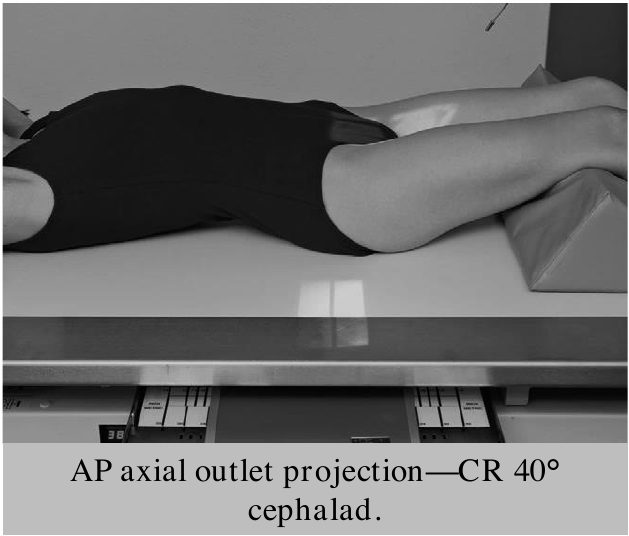
- • Ensure no rotation of pelvis (ASIS-to-tabletop distance equal on both sides).تأكّد من عدم دوران الحوض (تساوي مسافة ASIS عن سطح الطاولة في الجانبين).
- • Center IR to projected CR.مركِز IR على موضع الشعاع المركزي المُسقَط.
الشعاع المركزيCR
- • Angle CR cephalad 20° to 35° for males and 30° to 45° for females.أمِل الشعاع المركزي باتجاه الرأس 20 إلى 35 درجة للذكور و30 إلى 45 درجة للإناث.
- • (These different angles are caused by differences in the shape of male and female pelves.)(سبب اختلاف الزوايا هو اختلاف شكل حوض الذكر عن حوض الأنثى.)
- • Direct CR to a midline point 1 to 2 inches (3 to 5 cm) distal to the superior border of the symphysis pubis or greater trochanters.وجّه الشعاع المركزي إلى نقطة على خط المنتصف تقع 1 إلى 2 إنش (3 إلى 5 سم) أسفل الحافة العليا للارتفاق العاني أو المدوَّرين الكبيرين.
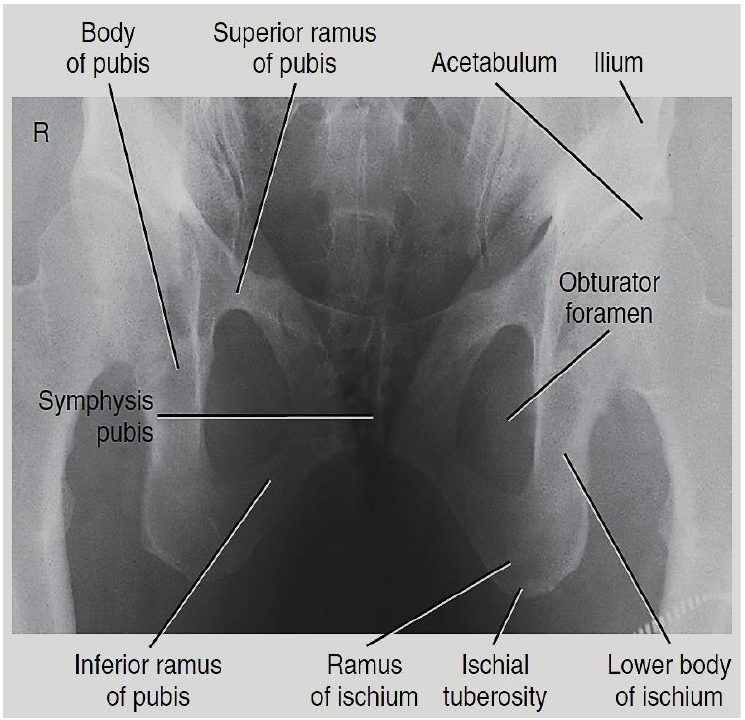
ما تُظهره الصورةAnatomy Demonstrated
- • Superior and inferior rami of pubis and body and ramus of ischium are demonstrated well, with minimal foreshortening or superimposition.يظهر فرعا العانة العلوي والسفلي، وجسم الإسك وفرعه بوضوح، بأقل تقصير أو تراكب.
الإسقاط المحوري الأمامي الخلفي لمدخل الحوضAP Axial Inlet
دواعي الفحصClinical Indications
- • Assessment of pelvic trauma for posteriordisplacement or inward or outward rotation of the anterior pelvisتقييم إصابات الحوض من حيث الإزاحة الخلفية أو دوران الجزء الأمامي من الحوض إلى الداخل أو الخارج.
وضعية المريضPatient Position
With patient supine, provide pillow for head. With patient’s legs extended, place support under knees for comfort.
المريض مستلقٍ على ظهره مع وسادة تحت الرأس. والساقان ممدودتان، مع دعامة تحت الركبتين للراحة.
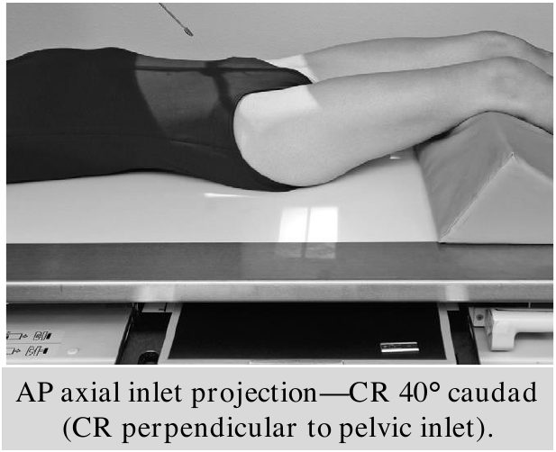
وضعية الجزءPart Position
- • Align midsagittal plane to CR and to midline of table and/or IR.طابِق المستوى السهمي الناصف مع الشعاع المركزي ومع خط منتصف الطاولة و/أو IR.
- • Ensure no rotation of pelvis (ASIS-to-tabletop distance equal on both sides).تأكّد من عدم دوران الحوض (تساوي مسافة ASIS عن سطح الطاولة في الجانبين).
- • Center IR to projected CR.مركِز IR على موضع الشعاع المركزي المُسقَط.
الشعاع المركزيCR
- • Angle CR caudad 40° (near perpendicular to plane of inlet).أمِل الشعاع المركزي 40 درجة باتجاه القدمين (قريباً من العمودي على مستوى المدخل).
- • Direct CR to a midline point at level of ASISوجّه الشعاع المركزي إلى نقطة على خط المنتصف عند مستوى ASIS.
ما تُظهره الصورةAnatomy Demonstrated
- • This is an axial projection that demonstrates pelvic ring or inlet (superior aperture) in its entirety.هذا إسقاط محوري يُظهر حلقة الحوض أو مدخله (الفتحة العليا) بكامله.
التدريعShielding
Shield radiosensitive tissues outside region of interest. Gonadal shielding is possible for males if care is taken not to obscure essential pelvic anatomy.
درّع الأنسجة الحساسة للإشعاع الواقعة خارج المنطقة المطلوبة. ويمكن تدريع الغدد التناسلية للذكور إذا انتُبه إلى عدم حجب التراكيب الحوضية الأساسية.
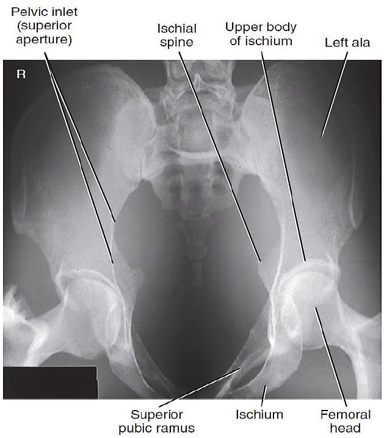
الإسقاط المائل الخلفي للحوض والحُقّPosterior Oblique Acetabulum (Judet)
Judet method
طريقة جوديه.
دواعي الفحصClinical Indications
Acetabular fracture or pelvis injury Right and left oblique projections generally are taken for comparison, with both centered for upside or both for downside acetabulum. Both sides may have to be demonstrated on a single 14- × 17-inch (35- × 43-cm) IR. In this case, centering should be adjusted to include both hips.
كسر الحُقّ أو إصابة الحوض. تُؤخذ عادةً صورتان مائلتان يمنى ويسرى للمقارنة، كلتاهما مُمركَزة على الحُقّ العلوي، أو كلتاهما على الحُقّ السفلي. وقد يلزم إظهار الجانبين على IR واحد بحجم 14 × 17 إنش (35 × 43 سم)، وفي هذه الحالة يُعدَّل التمركز ليشمل الوركين.
وضعية المريضPatient Position
Posterior Oblique Positions
الوضعيات المائلة الخلفية.
With patient semisupine, provide pillow for head and position for affected side up or down, depending on anatomy to be demonstrated.
المريض في وضع نصف استلقاء، مع وسادة تحت الرأس، ويوضَع بحيث يكون الجانب المصاب إلى الأعلى أو الأسفل حسب التراكيب المطلوب إظهارها.
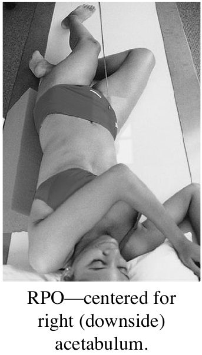
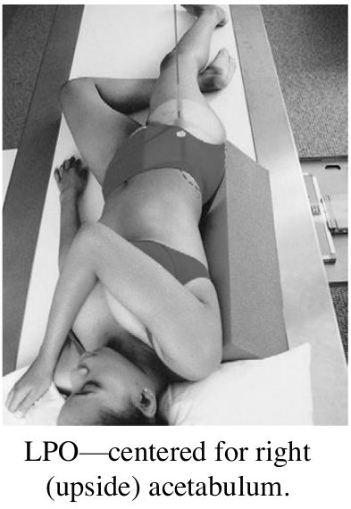
وضعية الجزءPart Position
- • Place patient in 45° posterior oblique, with both pelvis and thorax 45° from tabletop.ضع المريض بوضع مائل خلفي بزاوية 45 درجة، بحيث يكون الحوض والصدر كلاهما بزاوية 45 درجة عن سطح الطاولة.
- • Support with wedge sponge.ادعمه بإسفنجة إسفينية.
- • Align femoral head and acetabulum of interest to midline of tabletop and/or IR.طابِق رأس عظم الفخذ والحُقّ المطلوبين مع خط منتصف الطاولة و/أو IR.
- • Center IR longitudinally to CR at level of femoral head.مركِز IR طولياً على الشعاع المركزي عند مستوى رأس عظم الفخذ.
الشعاع المركزيCR
- • When anatomy of interest is downside, direct CR perpendicular and centered to 2 inches (5 cm) distal and 2 inches (5 cm) medial to downside ASIS.إذا كان الجزء المطلوب في الجانب السفلي: وجّه الشعاع المركزي عمودياً ومُمركَزاً على نقطة 5 سم أسفل و5 سم إنسيّ ASIS السفلية.
- • When anatomy of interest is upside, direct perpendicular and centered to 2 inches (5 cm) directly distal to upside ASIS.إذا كان الجزء المطلوب في الجانب العلوي: وجّهه عمودياً ومُمركَزاً على نقطة 5 سم أسفل ASIS العلوية مباشرةً.
ما تُظهره الصورةAnatomy Demonstrated
- • When centered to the downside acetabulum, the anterior rim of the acetabulum and the posterior (ilioischial) column are demonstrated.عند التمركز على الحُقّ السفلي: تظهر الحافة الأمامية للحُقّ والعمود الخلفي (الحرقفي الإسكي).
- • The iliac wing also is well visualized.ويظهر جناح الحرقفة بوضوح أيضاً.
- • When centered to the upside acetabulum, the posterior rim of the acetabulum and the anterior (iliopubic) column are demonstrated.عند التمركز على الحُقّ العلوي: تظهر الحافة الخلفية للحُقّ والعمود الأمامي (الحرقفي العاني).
- • The obturator foramen also is visualized.وتظهر الثقبة السدّادية أيضاً.
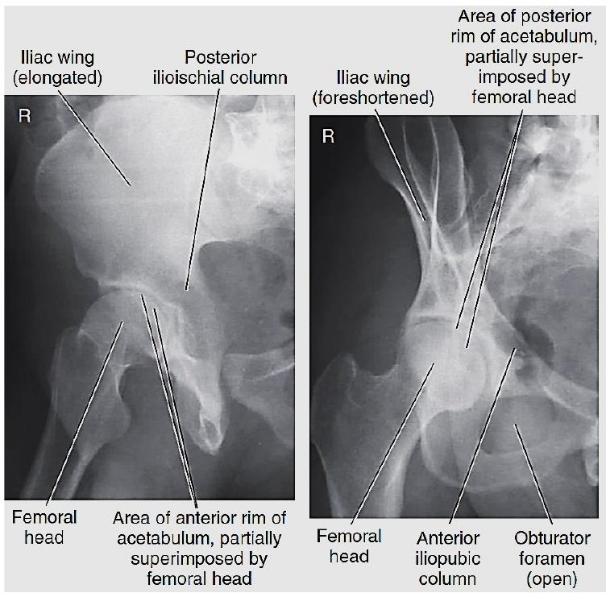
المحاضرة مسموعة
نص الأستاذ بالإنكليزي مثل الأصل · 10.0 دقيقة. اضغط أي جملة تسمعها، أو مصطلح منقّط تسمع لفظه ومعناه.
Projections & Technical Factorsالمسقطات وعوامل التعرّض
Projections & Technical Factors
PROJECTIONS — Pelvis
AP Pelvis projection (bilateral hips): Pelvis
AP bilateral frog-leg projection: Pelvis
AP axial outlet projection
AP axial inlet projection*: Pelvis
Posterior oblique Pelvis–acetabulum
Technical Factors
Minimum SID is 40 inches (102 cm).
IR size—35 × 43 cm (14 × 17 inches), Lengthwise
70-80 kVp
20-30 mAs
Shielding Shield radiosensitive tissues outside region of interest.
Ensure shielding does not obscure any aspect of Pelvis.
Shielding Shield gonads for both males and females without obscuring essential anatomy.
Respiration Suspend respiration during exposure.
Pelvis Anatomyتشريح الحوض
Pelvis Anatomy
Ilium.
Pubis (pubic bone)
Pelvis—male versus female
Female pelvis
Male pelvis
Pelvis AP Radiograph & Pelvic Jointsصورة الحوض الأمامية الخلفية ومفاصل الحوض
Pelvis AP Radiograph & Pelvic Joints
A. Iliac crest
B. ASIS (anterior end of crest)
C. Body of left ischium
D. Ischial tuberosity
E. Symphysis pubis (Pubic symphysis)
F. Inferior ramus of right pubis
G. Superior ramus of right pubis
H. Right ischial spine
I. Acetabulum of right hip
J. Neck of right femur
K. Greater trochanter of right femur
L. Head of right femur
M. Ala, or wing, of right ilium
Pelvis—AP
SUMMARY OF PELVIC JOINTS
AP Pelvis (Bilateral Hips)إسقاط الحوض الأمامي الخلفي (الوركان معاً)
AP Pelvis (Bilateral Hips)
Clinical Indications
Fractures, joint dislocations, degenerative disease, and bone lesions
Patient Position
With patient supine, place arms at sides or across superior chest; provide pillow for head and support for under knees; may be performed erect with correction of lower limbs to rotate proximal femora into anatomic position and no fracture is suspected.
Part Position
Align midsagittal plane of patient to centerline of table and to CR.
Ensure that pelvis is not rotated; distance from tabletop to each ASIS should be equal.
Separate legs and feet, then internally rotate long axes of feet and lower limbs 15° to 20°
Technologist may have to place sandbag between heels and tape top of feet together or use additional sandbags against feet to retain this position.
CR
CR is perpendicular to IR, directed midway between level of ASIS and the symphysis pubis.
This is approximately 2 inches (5 cm)inferior to level of ASIS.
Center IR to CR.
Anatomy Demonstrated
Pelvic girdle, L5, sacrum and coccyx, femoral heads and neck, and greater trochanters are visible.
WARNING: Do not attempt to rotate legs internally if a hip fracture or dislocation is suspected. Perform position with minimal movement of affected leg.
AP Bilateral Frog-Leg (Modified Cleaves)إسقاط ساق الضفدع الأمامي الخلفي للجانبين
AP Bilateral Frog-Leg (Modified Cleaves)
Modified cleaves method
Clinical Indications
Demonstration of a nontrauma hip
Developmental dysplasia of hip (DDH), also known as congenital hip dislocation (CHD).
Patient Position
With patient supine, provide pillow for head and place arms across chest
Part Position
Align patient to midline of table and/or IR and to CR.
Ensure pelvis is not rotated (equal distance of ASIS to tabletop).
Center IR to CR, at level of femoral heads, with top of IR Approximately at level of iliac crest.
Flex both knees approximately 90°, as demonstrated.
Place the plantar surfaces of feet together and abduct both femora 40° to 45° from vertical.
Ensure that both femora are abducted the same amount and that pelvis is not rotated.
Place supports under each leg for stabilization if needed.
CR
CR is perpendicular to IR, directed to a point 3 inches (7.5 cm) below level of ASIS (1 inch [2.5 cm] above symphysis pubis).
NOTE 1: This projection frequently is performed for periodic follow-up examinations on younger patients. Correct placement of gonadal shielding is important for male and female patients, ensuring that hip joints are not obscured.
NOTE 2: Less abduction of femora of only 20° to 30° from vertical provides for the least foreshortening of femoral necks, but this placement foreshortens the entire proximal femora, which may not be desirable.
Anatomy Demonstrated
Femoral heads and necks, acetabulum, and trochanteric areas are visible on one radiograph.
AP Axial Outlet (Taylor)الإسقاط المحوري الأمامي الخلفي لمخرج الحوض
AP Axial Outlet (Taylor)
(for anterior-inferior pelvic bones): Pelvis Taylor method
Clinical Indications
Bilateral view of the bilateral pubis and ischium to allow assessment of pelvic trauma for fractures and displacement
Patient Position
With patient supine, provide pillow for head. With patient’s legs extended, place support under knees for comfort.
Part Position
Align midsagittal plane to CR and to midline of table and/or IR.
Ensure no rotation of pelvis (ASIS-to-tabletop distance equal on both sides).
Center IR to projected CR.
CR
Angle CR cephalad 20° to 35° for males and 30° to 45° for females.
(These different angles are caused by differences in the shape of male and female pelves.)
Direct CR to a midline point 1 to 2 inches (3 to 5 cm) distal to the superior border of the symphysis pubis or greater trochanters.
Anatomy Demonstrated
Superior and inferior rami of pubis and body and ramus of ischium are demonstrated well, with minimal foreshortening or superimposition.
AP Axial Inletالإسقاط المحوري الأمامي الخلفي لمدخل الحوض
AP Axial Inlet
Clinical Indications
Assessment of pelvic trauma for posteriordisplacement or inward or outward rotation of the anterior pelvis
Patient Position
With patient supine, provide pillow for head. With patient’s legs extended, place support under knees for comfort.
Part Position
Align midsagittal plane to CR and to midline of table and/or IR.
Ensure no rotation of pelvis (ASIS-to-tabletop distance equal on both sides).
Center IR to projected CR.
CR
Angle CR caudad 40° (near perpendicular to plane of inlet).
Direct CR to a midline point at level of ASIS
Anatomy Demonstrated
This is an axial projection that demonstrates pelvic ring or inlet (superior aperture) in its entirety.
Shielding
Shield radiosensitive tissues outside region of interest. Gonadal shielding is possible for males if care is taken not to obscure essential pelvic anatomy.
Posterior Oblique Acetabulum (Judet)الإسقاط المائل الخلفي للحوض والحُقّ
Posterior Oblique Acetabulum (Judet)
Judet method
Clinical Indications
Acetabular fracture or pelvis injury Right and left oblique projections generally are taken for comparison, with both centered for upside or both for downside acetabulum. Both sides may have to be demonstrated on a single 14- × 17-inch (35- × 43-cm) IR. In this case, centering should be adjusted to include both hips.
Patient Position
Posterior Oblique Positions
With patient semisupine, provide pillow for head and position for affected side up or down, depending on anatomy to be demonstrated.
Part Position
Place patient in 45° posterior oblique, with both pelvis and thorax 45° from tabletop.
Support with wedge sponge.
Align femoral head and acetabulum of interest to midline of tabletop and/or IR.
Center IR longitudinally to CR at level of femoral head.
CR
When anatomy of interest is downside, direct CR perpendicular and centered to 2 inches (5 cm) distal and 2 inches (5 cm) medial to downside ASIS.
When anatomy of interest is upside, direct perpendicular and centered to 2 inches (5 cm) directly distal to upside ASIS.
Anatomy Demonstrated
When centered to the downside acetabulum, the anterior rim of the acetabulum and the posterior (ilioischial) column are demonstrated.
The iliac wing also is well visualized.
When centered to the upside acetabulum, the posterior rim of the acetabulum and the anterior (iliopubic) column are demonstrated.
The obturator foramen also is visualized.
كل أسئلة المحاضرة: السؤال إنكليزي وتحته عربي، وكل خيار بلغتين، والجواب الصحيح معلّم ويّاه «ليش صح» · 0.3 MB
قراءة الأسئلة تحميلاضغط أي مصطلح منقّط تسمع لفظه ومعناه.